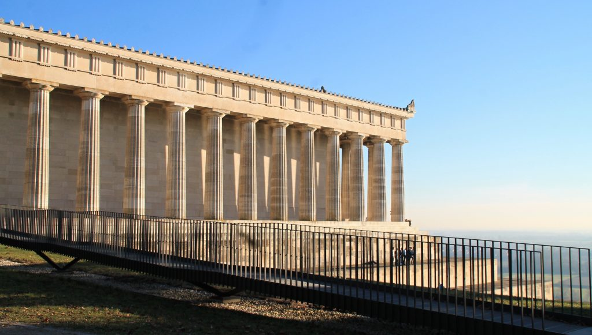

Walhalla, um templo grego na Alemanha.
DEZEMBRO 29, 2021 • DESTINO DO MÊS

Walhalla,
também chamado de “Partenon alemão”,
está localizado em uma posição majestosa acima do Danúbio,
perto de Regensburg. Este edifício neoclássico em forma de templo representa um dos mais importantes e
belos monumentos alemães do século XIX.
Talvez você já tenha ouvido esse nome, porque Walhalla,
seria o “paraíso” segundo a mitologia nórdica, onde seria o destino dos que morreram de forma heróica.
Lá, os guerreiros mais nobres e destemidos, que morreram no campo de batalha,
escolhidos por Odin (o deus no mais alto escalão dessa mitologia) gozariam da vida eterna.
Inspirado neste conceito, o edifício foi construído a pedido do Rei Ludwig I da Baviera,
com o desejo pessoal de eternizar um lugar de memória para homens e
mulheres germânicos de méritos extraordinários,
como inspiração e ponto de referência para a futura nação.
O historiador Johannes von Müller foi o responsável pela seleção inicial das personalidades a serem
homenageadas.
O Walhalla começou a ser construído em 1830, sob a visão do arquiteto preferido de Ludwig I,
Leo von Klenze (1784-1864), um dos mais importantes arquitetos neoclássicos do século XIX.
O design de Klenze foi inspirado principalmente no famoso Partenon na Acrópole de Atenas,
datado de 5 aC. Originalmente, o objetivo de Ludwig I era abrigar os bustos de pessoas a serem
homenageadas no futuro, para inspirarem e trazer orgulho ao povo germânico.
Inicialmente 96 bustos foram selecionados,
dispostos ao longo das paredes internas do prédio, homenageando escritores,
clérigos, cientistas, guerreiros e outros homens e mulheres, escolhidos por Ludwig I e seus conselheiros.
Entre os bustos originais, podemos destacar o de Lutero, Beethoven e Mozart.
No entanto, desde 1962, novos bustos foram adicionados em intervalos de cinco a sete anos,
e hoje encontramos 130 bustos e 65 placas (as placas foram feitas para pessoas cujos retratos
ou descrições não estavam disponíveis para modelar as esculturas).
Albert Einstein foi um dos personagens desta nova leva de homenageados,
assim como Wilhelm Conrad Roentgen, responsável pela descoberta do raio-X.
A escolha das personalidades a serem homenageadas ficou a cargo do Conselho de Ministros da Baviera,
assessorado pela Academia de Ciências da Baviera. Desde 2016,
o Walhalla é administrado pela Administração do Palácio da Baviera.

O QUE DIZEM NOSSOS VIAJANTES
Viagem Alemanha
Eu procurando guias em português na Alemanha pela internet me deparei com alguns,
mas este nome me conquistou a primeira vista…
Entrei em contato e rapidamente tive resposta, contratei traslado e um passeio por Hamburgo…
já que meu tempo sério pouco
Logo de início tivemos uma ótima recepção e a um passeio pela cidade foi Show,
apesar da chuva frio e neve a Rafaela não perdeu seu carisma,
atenção com todos e uma aula de história incrível… Indico e assino em baixo valeu cada segundo.
Valeu Rafaela e Rafael !!!
MAIS RECENTES NO BLOG